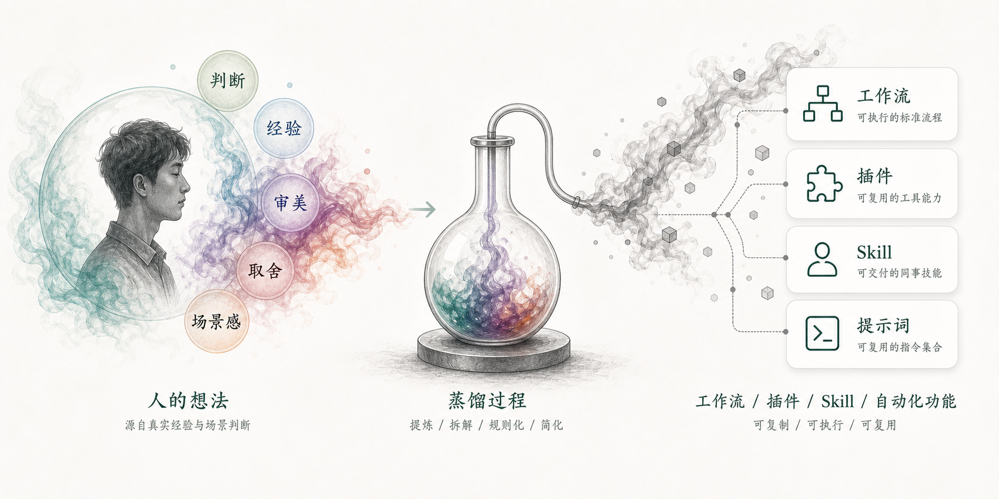

概念定义：从人到 Skill 的信息损耗
所谓“蒸馏”，是把复杂的人类工作过程，提炼为可复用、可自动化的规则、步骤或模型，从而被机器或他人以更低成本复制的过程。
抗蒸性，是指在这一过程中，仍能保留在关键判断、审美取舍与责任承担上的人味与独特性，难以被低损耗复制。
看看你的判断、经验、审美和取舍，有多难被低损耗蒸馏成一套工作流、一个插件，或一个同事 Skill。

人在 AI 时代的低损耗不可蒸馏能力
所谓“蒸馏”，是把复杂的人类工作过程，提炼为可复用、可自动化的规则、步骤或模型，从而被机器或他人以更低成本复制的过程。
抗蒸性，是指在这一过程中，仍能保留在关键判断、审美取舍与责任承担上的人味与独特性，难以被低损耗复制。
识别关键变量与隐含约束，理解事物的真实处境。
判断适用范围与边界条件，知道何时该停下或调整。
在既有要求上做出结构化或创造性的重新组织。
基于品味与语境，做出难以量化的审美与风格判断。
明确目标与取舍优先级，坚持长期与根本价值。
将经验转化为直觉与能力，可迁移到新情境中。
深度参与真实任务，复盘关键决策与结果，形成个人案例库。
刻意练习在模糊信息下做决定，建立判断的条件与依据。
将直觉、审美与取舍的逻辑外显化，形成可传递的思维资产。
说明：本测试使用自拟的蒸馏损耗模型，不用于招聘、医疗或人格定论。
这部分不会直接改变你的个人含活人量分数，只帮助结果页区分：是你本人难蒸，还是这份工作本身更容易或更不容易被蒸。
跳过后仍可得到个人含活人量；结果页只是不显示岗位蒸馏度判断。
测试完成！
你的段位是